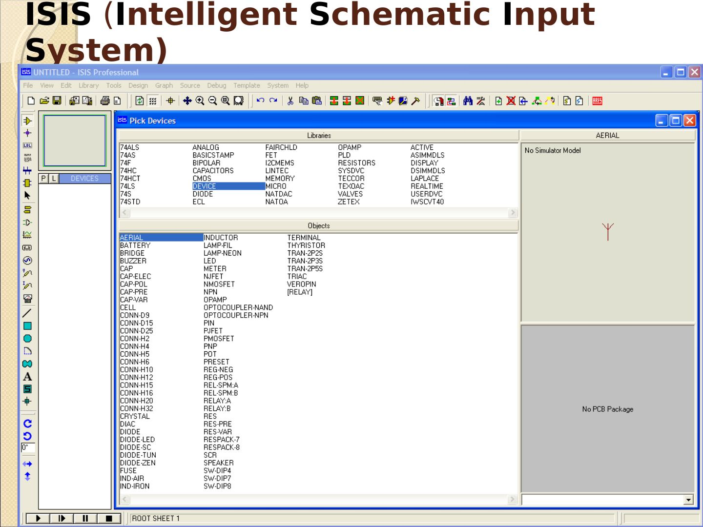
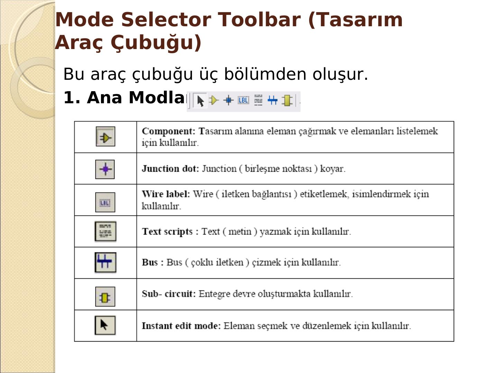

· EEM214
EEM214 Electronics I: Proteus (ISIS/ARES) Basics Presentation, Menus and Toolbars (cobanoglu.wikispaces.com)
EEM214 – Elektronik I · 22.02.2012 · 16.10.2026
This post presents the 47-slide Turkish presentation "Computer-Aided Design II – Proteus (ISIS/ARES)" found in the EEM214 Electronics I course folder. According to the bibliography on the last slide, the presentation was taken from the "vocational software" presentation on cobanoglu.wikispaces.com; it appears to have been prepared for a vocational high school or vocational college course. The folder also contained a copy of the same presentation without the bibliography slide (PROTEUS_TUTORIAL.ppt). Since simulations in the EEM214 and EEM311 reports were often done with Proteus, it was probably used as a reference in the course. The presentation can be downloaded at the end of the post.
This content belongs to a third-party source; it is shared for archival and nostalgic purposes with attribution. It will be removed at the request of the rights holder.
Computer-aided design and Proteus
With the spread of computers, drawing programs began to be used in technical fields. Among the few software packages capable of drawing, simulation and analysis all in one are Proteus (ISIS-ARES), Micro-Cap, MicroSim PSpice, OrCAD PSpice, DesignLab, Electronics Workbench (EWB), Multisim, Ultiboard, Ulticap and BoardMaker.
Advantages of computer-aided design: In a real laboratory, there are always issues such as obtaining components, not finding components with the desired specifications, faulty components, obtaining suitable measuring instruments, and the risk of accidents/failures; a virtual laboratory eliminates these and makes it possible to perform calculations and measurements that cannot be done in a real environment with high precision. Cost: setting up a real electronics laboratory is expensive. Time: drawing the circuit, building it, testing it, producing a bill of materials and transferring it to a printed circuit board takes very little time.
What is Proteus? Proteus, a product of Labcenter Electronics, is a program for visual simulation of electronic circuits; it covers circuit drawing, simulation, animation and PCB drawing. Its most important difference from classic "workbench" programs is that it can also run .HEX files loaded onto microprocessors. Like a virtual laboratory, it allows you to change the values of circuit components and rerun the circuit, and to obtain an electrical rule check report and an organized bill of materials.
Files installed with Proteus: Proteus VSM Model Help (use of the components in the library), ARES 7 Professional (printed circuit board drawing) and its help, ISIS 7 Professional (circuit drawing, simulation and animation) and its help, License Manager, ProSPICE Help, Read Me and Sample Designs (example applications).
The ISIS workspace
ISIS (Intelligent Schematic Input System) is Proteus's circuit drawing, simulation and analysis program and forms the core of Proteus. In the window, the title bar is at the top, below it are the menu bar and toolbars (File, View, Edit, Design; toggled on and off via View → Toolbars), on the left is the design toolbar (Mode Selector), and at the bottom are the orientation toolbar (Orientation) and the animation control panel. The overview window in the design area shows a miniature of the work; the status bar and coordinate display keep the user informed.

ISIS file extensions: .DSN (design file, the main working file), .DBK (backup), .SEC (section), .MOD (module), .LIB (library), .SDF (netlist).
Toolbars
- Mode Selector (design toolbar): consists of three sections: main modes (Component for placing components, Junction dot, Wire label, Text script, Bus, Sub-circuit, Instant edit), "gadgets", and 2D graphics drawing tools.
- File, View, Edit (layout) and Design toolbars.
- Orientation toolbar: rotation and reflection (mirroring).
- Animation Control Panel: Play (runs the circuit), Step (runs it step by step), Pause (pauses it), Stop (stops it).

Menus
- File: Import Bitmap (inserting a BMP), Import/Export Section (saving a part of the work and bringing it into other works), Export Graphics (saving as an image), Set Area (the section to be printed).
- View: view and grid settings (1000 th = 1 inch = 2.54 cm).
- Edit: Find and Edit Component, Send to Back (Ctrl+B), Bring to Front (Ctrl+F), Tidy (removes unused components from the list).
- Library: Pick Device/Symbol (P), Make Device, Make Symbol, Packaging Tool, Store Local Object, Decompose, Compile to Library, Autoplace Library, Verify Packaging, Library Manager.
- Tools: Real Time Annotation, Real Time Snap, Wire Auto Router (W), Search and Tag, Property Assignment Tool (A), Global Annotator, ASCII Data Import, Bill of Materials, Electrical Rule Check, Netlist Compiler, Model Compiler, Netlist to ARES, Backannotate from ARES.
- Design: Edit Design Properties (title, document number, revision, author), Edit Sheet Properties, New/Remove/Goto Sheet, Zoom to Child, Exit to Parent, Root Sheet.
- Graphs: Edit Graph, Add Trace, Simulate Graph, View Log, Export Data, Clear Data, Conformance Analysis.
- Source: for the source code of programmable ICs (8051, PIC): Add/Remove Source Files, Define Code Generation Tools, Setup External Text Editor, Build All.
- Debug: Start/Restart Debugging, Pause (Pause key), Stop (Shift+Break), Execute, Execute Without Breakpoints, Execute for Specified Time, Step Over (F10), Step Into, Step Out, Step To, Reset Popup Windows, Reset Persistent Model Data (EPROM/EEPROM contents), Use Remote Debug Monitor, Tile Horizontally/Vertically; Simulation Log and Watch Window while the circuit is running.
- Template: Set Design Defaults (design area and animation colors, default font), Set Graph Colours, Set Graphics Styles, Set Text Styles, Set Graphics Text, Set Junction Dots.
- System: System Info, Update Manager, Text Viewer, Set BOM Scripts, Set Environment (autosave interval, undo steps, tooltip delay, synchronization with ARES), Set Paths, Set Property Definitions, Set Sheet Sizes, Set Text Editor, Set Keyboard Mapping, Set Animation Options (simulation speed, voltage/current ranges, display of pin logic states and current directions), Set Simulator Options (tolerance, MOSFET region values, temperature, delay), Save Preferences.
- Help: ISIS Help (F1), Proteus VSM Help, Proteus VSM SDK, Sample Designs, Stop Press (release notes), About ISIS.
Download
The original PowerPoint file of the presentation and its PDF copy can be downloaded at the end of the post.